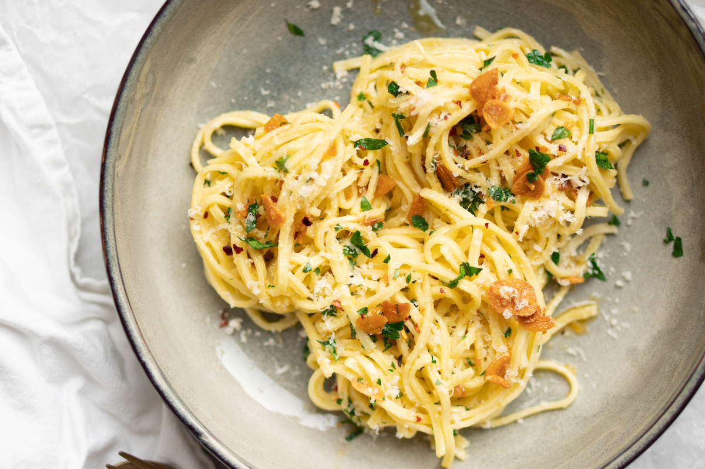

Pasta Aglio e Olio

Description
Pasta aglio e olio is an essential Italian pasta dish. Incredibly simple, but super delicious.
Ingredients
- Pasta
- Garlic cloves
- Olive oil
- Chili flakes (Optional)
Steps
- Make pasta
- Chop garlic
- Make sauce
- Mix it all together